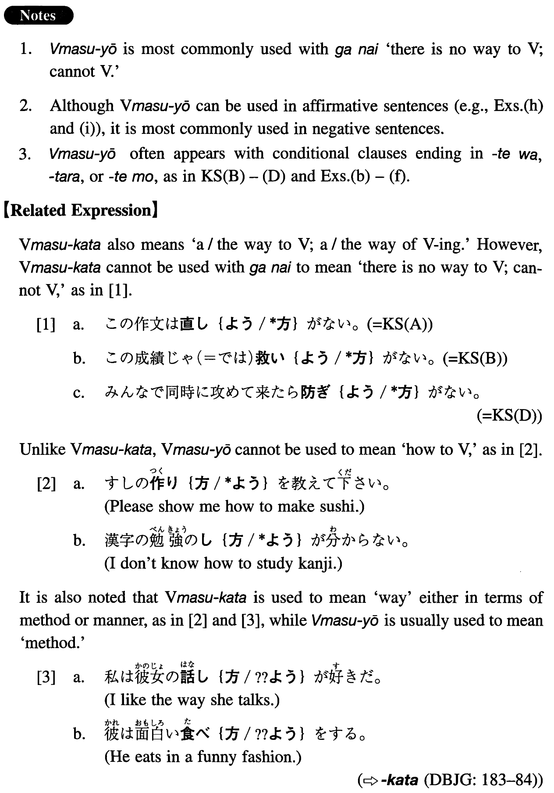

よう (1) (I. 595)
- (ksa).
- この作文は直しようがない。
- There is no way to correct this composition.
- (ksb).
- この成績じゃ・では救いようがない。
- There is no way to save (him) with this grade.
- (ksc).
- こんなに壊れてしまっては直しようがない。
- We cannot fix it now that it is broken to this extent.
- (ksd).
- みんなで同時に攻めて来たら防ぎようがない。
- There is no way to defend ourselves if all of them attack us at the same time.
- (a).
- それ以外に考えようがない。
- There is no other way to think (about it).
- (b).
- 日本語があんなに下手じゃどうしようもない。
- There is no hope to do with such poor Japanese. (literally: There is no way even to do if his Japanese is that poor.)
- (c).
- 漢字が読めないんじゃ（＝のでは）仕事のさせようがない。
- There is no way to have him work if he cannot read kanji.
- (d).
- こんなに学生が多くては教えようがない。
- There is no way to teach if there are this many students.
- (e).
- そんな聞き方をされたら答えようがない。
- I cannot answer if you ask (literally: I am asked) that way.
- (f).
- 私に謝ってもらってもしようがない。
- There is no point apologizing to me (literally: even if you apologize to me).
- (g).
- ほかにやりようはないのだろうか。
- Isn't there any other way to do it, I wonder?
- (h).
- 見つからないのは探しようが悪いんだよ。
- It's because your way of searching (for it) is wrong that you cannot find it.
- (i).
- 読みようによってはこの手紙は遺書ともとれる。
- Depending on how you read it, this letter can be taken as a suicide note.
